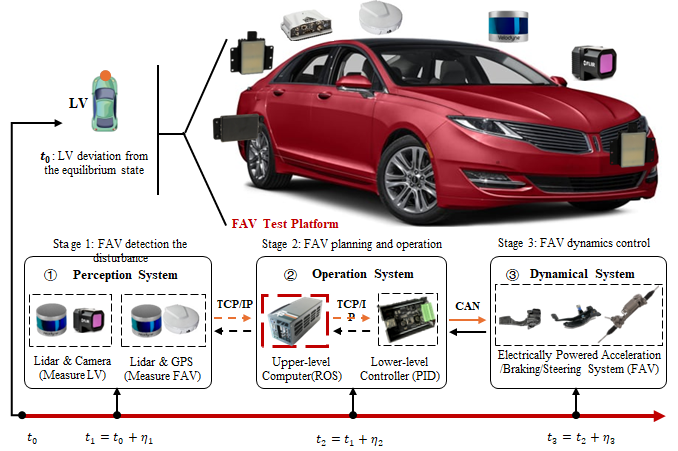

"Automated Vehicle Planning & Control Test"
Conducted from 09/2020 to Now
Recent research underscores the impact of automated vehicle (AV) control and planning on traffic. Despite the widespread application of these AV technologies, Several features of these automation systems remain inadequately understood due to the lack of comprehensive field tests and data necessary for accurate modeling. We are conducting a series of tests using two AV platforms to test their behavior by developing different planning and control algorithms in a two-layer design. The experiments incorporated linear/nonlinear/data-driven planning models within the upper-layer system and PID/MPC control within the lower-layer system. Field data were collected via the platform's sensors and adapted to better understand different planning and control performances in different scenarios.
